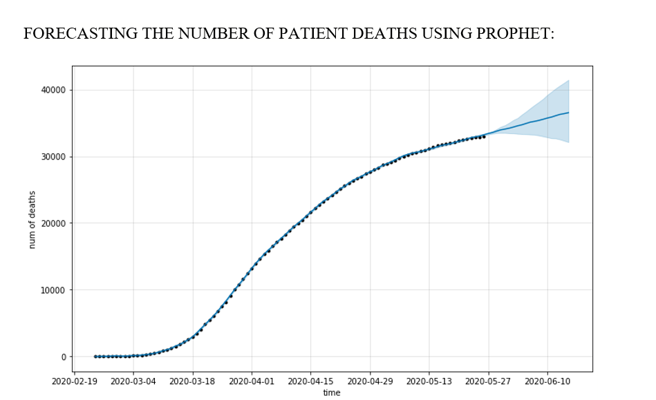

PREDICTING THE TREND OF POSITIVE CASES, DEATHS AND RECOVERIES IN THE FUTURE USING TIME SERIES.
ARIMA is a very popular statistical method for time series forecasting. ARIMA stands for Auto-Regressive Integrated Moving Averages. ARIMA models work on the following assumptions – • The data series is stationary, which means that the mean and variance should not vary with time. A series can be made stationary by using log transformation or differencing the series. • The data provided as input must be a univariate series, since arima uses the past values to predict the future values. ARIMA has three components – AR (autoregressive term), I (differencing term) and MA (moving average term). Let us understand each of these components – • AR term refers to the past values used for forecasting the next value. The AR term is defined by the parameter ‘p’ in arima. The value of ‘p’ is determined using the PACF plot. • MA term is used to defines number of past forecast errors used to predict the future values. The parameter ‘q’ in arima represents the MA term. ACF plot is used to identify the correct ‘q’ value. Auto ARIMA takes into account the AIC and BIC values generated (as you can see in the code) to determine the best combination of parameters. AIC (Akaike Information Criterion) and BIC (Bayesian Information Criterion) values are estimators to compare models. The lower these values, the better is the model.So rather than moving average model and exponential model ARIMA has a better fit.
Trend of positive cases from march to may

The graph tells the trend of Total number of Positive Cases per day from March to May.
Forescasting the number of positive cases using ARIMA.

The graph gives the forecasted trend (decreasing) of the positives cases on particular day up to June 7.
Forecasting number of recoveries date wise

The graph shows the forecasted trend of the number of recovery cases(increasing) using Prophet. So as the patient recovery is increasing ,this is a positive prospective achieved by Italy.
Forecasting number of deaths date wise
As we can see in the graph we have forecasted values from 24th May to a little beyond 10th June The graph shows the forecasted trend of the number of death cases(slow increase not steep/slight increase) using Prophet.